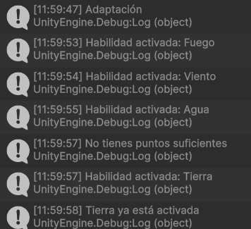
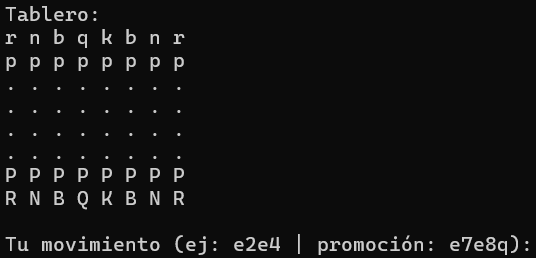
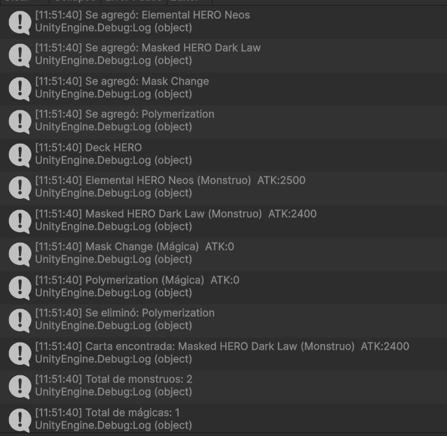

Árbol de habilidades — Unity
Prototipo de un sistema de habilidades con estructura de árbol. Incluye nodos, conexiones, requisitos jerárquicos y puntos necesarios para desbloquear habilidades.
ESTUDIANTE DE DESARROLLO DE EXPERIENCIAS INTERACTIVAS
Soy Benjamín Miranda, estudiante de Ingeniería en Realidad Virtual y Diseño de Juegos Digitales. Me interesa la programación y la creación de mecánicas de juego para desarrollar experiencias interactivas.
01 / MI TRABAJO
Una selección de videojuegos, prototipos y experiencias en las que he trabajado.

Prototipo de un sistema de habilidades con estructura de árbol. Incluye nodos, conexiones, requisitos jerárquicos y puntos necesarios para desbloquear habilidades.

Motor de ajedrez que utiliza Minimax y poda Alpha-Beta para analizar movimientos. Incluye evaluación de piezas, control del centro, detección de jaque y ordenamiento de movimientos para elegir jugadas.

Implementación de una lista enlazada para administrar una mano de cartas de Yu-Gi-Oh!. Permite robar cartas, mostrar la mano, buscar cartas por nombre, jugar cartas y contar elementos según su nombre o prefijo.
02 / SOBRE MÍ
02Soy estudiante de Ingeniería en Realidad Virtual y Diseño de Juegos Digitales. Tengo especial interés en la programación, la lógica y el desarrollo de mecánicas de juego. Me motiva aprender nuevas herramientas y llevar ideas a prototipos interactivos, especialmente utilizando Unity.
Contactarme ↗03 / HABILIDADES
Herramientas y conocimientos que utilizo en mis proyectos.
Unity · C# · Mecánicas de juego
↗Lógica de programación · Programación orientada a objetos
↗HTML · CSS · JavaScript · Three.js
↗Física en Unity · SpringJoint · LineRenderer
↗